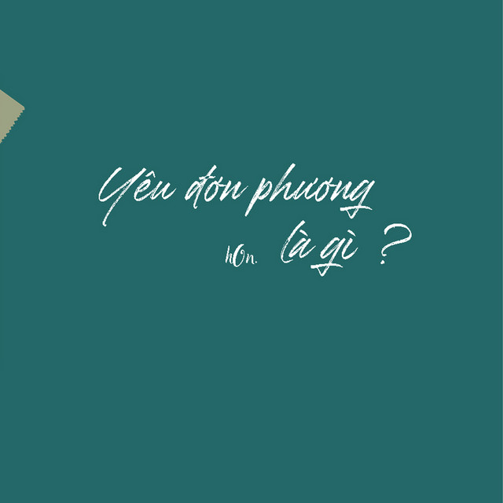

Ca Sĩ:Sơn Tùng MTP
Thể Loại: Nhạc Nước Ngoài
Thể Loại: Nhạc Nước Ngoài
Thể Loại: Nhạc Nước Ngoài
Thể Loại: Nhạc Nước Ngoài
Bật Tình yêu Lên
Lượt Xem: 1.062.006
Pháo Hồng
Lượt Xem: 18.062.006
Đơn Phương
Lượt Xem: 21.012.002
Có Em Chờ
Lưu Ý: Nhạc Có Chứa Nôi Dung Bạo Lực Vui Lòng Cân Nhắc Kĩ Trước Khi Xem. Nghiêm Cấm Những Người Yếu Tim Và Mắc Các Bệnh Về Tim Mạch Và Tâm Lý Không Ổn Định. Mọi Thứ Trong Phim Đều Là Giả Được Thực Hiện Bởi Những Người Chuyên Gia Có Kinh Nghiệm Và Không Bắt Chước Theo Với Mọi Hình Thức.
Moon looking bright tonight High in the sky Like trying to keep you alive Alright Just stay away from me Let me down easily You’re too late You’re too late Don’t you pray Don’t you pray Seeking for my embrace Wanting my touch, begging me to stay Every night and day Calling my name, shout it till you break You took my heart Held it and ripped it apart Made me your prisoner Got me going right under Feeling that you feign Fooling me again No need to explain Taking my own lane God’s helping me out Get over my doubt Thought I can’t live without Forget you right now Ah ah ah ah ah ah ah Ah ah ah ah Making my way Making my way Ah ah ah ah ah ah ah Ah ah ah ah Making my way Making my way Ah ah ah ah ah ah ah Ah ah ah ah Making my way Making my way Ah ah ah ah Making my way Making my way Ah ah ah ah Making my way Making my way I wanna know the cure For all that time you make me endure All the words you say Ought to keep your prey well and behaved I reckon’ it’s time Betting my luck on dimes Taking new leap in Getting far away from your cheating Telling me “I’ll kill for you” Like a truth With no proof Never knew Was a doll, now the thing you pulled, never make me yield Pin you down like a golden view Right uphill Make you dwell What I feel Wish you well Living right in the kingdom I built anew Draining tears and wallow in guilt